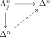
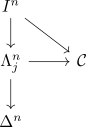
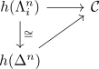

nerve and unique lifting
Proposition
Let $X$ be a simplicial set.
TFAE:
- $X$ has unique extensions for inner horn inclusions for $n \geq 2$

- $X$ has unique extensions for spine inclusions
- $X$ is isomorphic to the nerve of a category
Proof
1) $\implies$ 2)
follows as the spine is a retract TODO
existence
follows from spine inclusion factors through inner horn inclusion, as

uniqueness
follows as the spine is a retract
2) $\implies$ 3)
existence follows from nerve of a category as infinity category uniqueness follows as the composition is the only solution resp. the

3) $\implies$ 1)
Define a category $\mathcal{C}$ by
- $\mathrm{Ob}(\mathcal{C}) = X_0$
- $\mathrm{Mor}(\mathcal{C}) = X_1$
and composition via the unique lifting of $I^2$
TODO